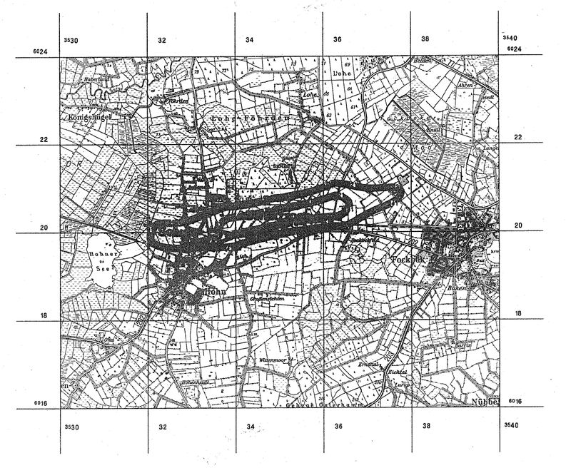

(Fundstelle: BGBl I 1996, 42 - 43)
1 : 50 000
Lärmschutzbereich
für den militärischen Flugplatz Hohn
(Gesetz zum Schutz gegen Fluglärm vom 30. März 1971, BGBl. I S. 282)
Das rechtwinklige Koordinatengitter entspricht dem Gauß-Krüger-System mit 3° breitem Meridianstreifen. Es zeigt zugleich die Begrenzung der zugehörigen Blätter der Deutschen Grundkarte 1 : 5 000.
Kartengrundlage:
Topographische Karte 1 : 50 000
(mit Genehmigung des Landesvermessungsamtes Schleswig-Holstein)
Gravur der Lärmschutzgrenzen und Druck:
Institut für Angewandte Geodäsie, Frankfurt am Main, 1995
